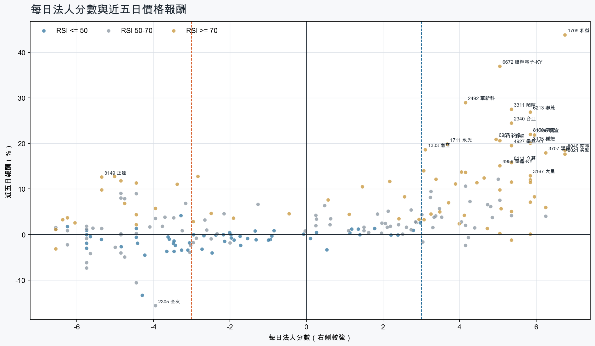
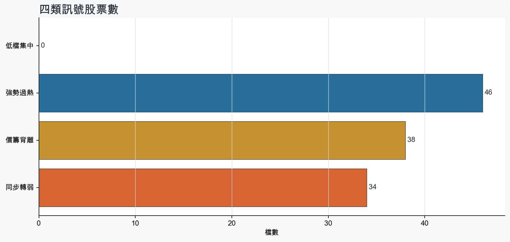
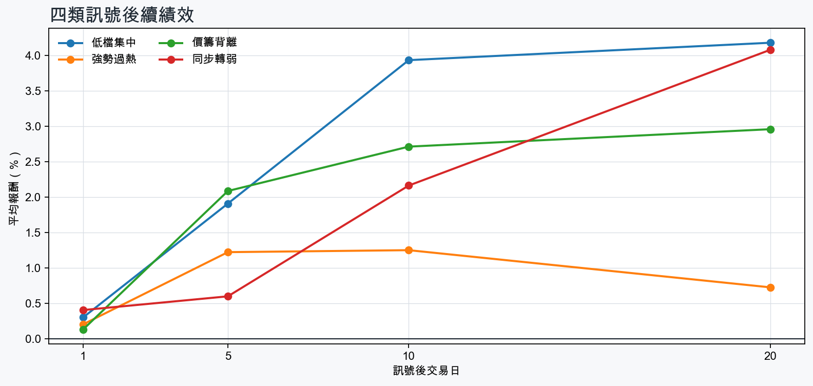

市場情緒中性分歧
近5日法人合計+930,181 張
篩選池上漲比例70.9%
籌碼好 / RSI低0 檔
籌碼差 / 價跌15 檔



EPS × PE VALUATION
法人常用的相對估值
顯示保守、基準與樂觀估值帶，不把單一數字包裝成精準目標價。
最新累計 EPS 依季數年化 × 同產業有效 P/E 的 Q25／中位數／Q75。排除本公司、非正 P/E，並以 1.5×IQR 排除離群值。估值帶是公開資料篩選值，不是法人目標價；未使用分析師預估 EPS。
MOOD × MONEY
情緒與籌碼雷達
熱度代表被討論程度；情緒分與法人方向分開計算。熱門不等於適合追價，樣本不足也不硬判多空。
| 股票 | 情緒 | 討論熱度 | 情緒 × 籌碼 | 情緒 × 基本面 |
|---|---|---|---|---|
| 3260 威剛同步轉弱 | 中性分歧 -2.8信心 100 | 1001 篇 / 128 留言 / 3 則新聞 | 高熱分歧法人分 -5.8 | 基本面與情緒分歧基本面分 +3.6 |
| 8046 南電強勢過熱 | 偏多 +34.4信心 100 | 962 篇 / 95 留言 / 3 則新聞 | 情籌共振法人分 +6.8 | 基本面與情緒共振基本面分 +3.6 |
| 3006 晶豪科同步轉弱 | 情緒高漲 +56.1信心 80 | 821 篇 / 44 留言 / 3 則新聞 | 熱門但法人撤退法人分 -4.8 | 基本面與情緒共振基本面分 +3.6 |
| 3105 穩懋強勢過熱 | 偏多 +30.8信心 66 | 771 篇 / 29 留言 / 3 則新聞 | 情籌共振法人分 +5.8 | 基本面與情緒共振基本面分 +3.6 |
| 3167 大量強勢過熱 | 中性分歧 +0.0信心 39 | 671 篇 / 18 留言 / 1 則新聞 | 高熱分歧法人分 +5.8 | 基本面與情緒分歧基本面分 +3.6 |
| 2305 全友同步轉弱 | 偏空 -29.7信心 30 | 460 篇 / 0 留言 / 3 則新聞 | 情籌雙弱法人分 -4.0 | 基本面佳、情緒悲觀基本面分 +3.6 |
| 2464 盟立同步轉弱 | 偏多 +29.7信心 30 | 460 篇 / 0 留言 / 3 則新聞 | 熱門但法人撤退法人分 -4.8 | 基本面與情緒共振基本面分 +3.0 |
| 1727 中華化同步轉弱 | 中性分歧 +9.9信心 30 | 460 篇 / 0 留言 / 3 則新聞 | 情籌混合法人分 -4.5 | 基本面與情緒分歧基本面分 +3.0 |
| 8028 昇陽半導體同步轉弱 | 偏多 +29.7信心 30 | 460 篇 / 0 留言 / 3 則新聞 | 熱門但法人撤退法人分 -6.5 | 基本面與情緒共振基本面分 +3.6 |
| 6226 光鼎同步轉弱 | 中性分歧 +0.0信心 30 | 460 篇 / 0 留言 / 3 則新聞 | 情籌混合法人分 -5.8 | 基本面與情緒分歧基本面分 +1.2 |
| 3376 新日興同步轉弱 | 中性分歧 +0.0信心 30 | 460 篇 / 0 留言 / 3 則新聞 | 情籌混合法人分 -5.8 | 基本面與情緒分歧基本面分 -1.8 |
| 2498 宏達電同步轉弱 | 中性分歧 +0.0信心 30 | 460 篇 / 0 留言 / 3 則新聞 | 情籌混合法人分 -5.0 | 基本面與情緒分歧基本面分 -2.8 |
01
籌碼好 / RSI低
優先研究基本面；法人續買且價格止穩時，才適合分批觀察。
今日沒有股票同時符合本組的完整條件。
02
籌碼好 / RSI高
趨勢強但不追價，等待量縮、RSI降溫或回測支撐。
| 股票 / 確認狀態 | 每日法人分 | 浦男式近似 | 法人加速度 | RSI / 相對強弱 | 量價確認 | 融資融券 | 每週集保確認 | 基本面 | EPS × 同業 P/E 估值 | 情緒 / 情籌 | 近期消息 | 論壇討論 |
|---|---|---|---|---|---|---|---|---|---|---|---|---|
| 8150 南茂等待拉回 · 100 分等拉回，不追價 | +5.8法人 +34,938 張 / 4 天 | 接近 · 90站上月線；中期均線偏多；法人籌碼偏多；留意RSI過熱 | +6,683 張近3日 +10,160 / 連續 +1 日 | 80.5相對大盤 +34.5% | 量比 1.47確認分 +6.5價格、量能與籌碼未見明顯弱項 | -%融資 - 張 / 融券 - 張 | +8.91 pp1000張 +9.72 pp | 單月營收年增 +33.3%；累計營收年增 +30.0%；2026 Q2 累計 EPS 2.00仍需觀察下一期財報延續性來源：公開資訊觀測站 | 基準 NT$ 111.9估值帶 74.96–202.0現價 127.5 · 估值帶內 · 距基準 -12.2%2026 Q2 累計 EPS 2.00 → 年化 4.00半導體同業 P/E 18.74／27.98／50.50 · n=149 · 信心中等以 Q2 累計 EPS 年化，不等同分析師全年預估來源：TWSE／TPEx 每日本益比 | 偏空 -29.7熱度 46 / 信心 30法人布局、市場悲觀 | 南茂(8150)做什麼的？記憶體封測漲價助攻，目標價上看166元數位時代 · 10/06【12:21 即時新聞】南茂(8150)盤中走強，AI 記憶體封測題材獲關注CMoney投資網誌 · 10/06 | 近期沒有明確提及本股的論壇樣本 |
| 3105 穩懋等待拉回 · 100 分等拉回，不追價 | +5.8法人 +30,597 張 / 4 天 | 接近 · 85站上月線；中期均線偏多；法人籌碼偏多；留意量能尚未確認、RSI過熱 | +3,847 張近3日 +16,457 / 連續 -1 日 | 79.6相對大盤 +24.7% | 量比 0.71確認分 +5.8價格、量能與籌碼未見明顯弱項 | -0.9%融資 -384 張 / 融券 -352 張 | +6.79 pp1000張 +6.93 pp | 單月營收年增 +30.6%；累計營收年增 +33.0%；2026 Q2 累計 EPS 3.56仍需觀察下一期財報延續性來源：公開資訊觀測站 | 基準 NT$ 199.2估值帶 133.4–357.3現價 592.0 · 高於估值帶 · 距基準 -66.3%2026 Q2 累計 EPS 3.56 → 年化 7.12半導體同業 P/E 18.74／27.98／50.18 · n=149 · 信心中等以 Q2 累計 EPS 年化，不等同分析師全年預估來源：TWSE／TPEx 每日本益比 | 偏多 +30.8熱度 77 / 信心 66情籌共振 | 穩懋9月營收年月雙增 Q3受惠光通訊出貨放大增長news.cnyes.com · 10/05穩懋9月營收年月雙增 Q3受惠光通訊出貨放大增長Yahoo股市 · 10/05 | [情報] 穩懋 3105 9月營收PTT Stock · 10-05 · 29 留言 |
| 8021 尖點等待拉回 · 100 分等拉回，不追價 | +6.8法人 +5,182 張 / 5 天 | 接近 · 90站上月線；中期均線偏多；法人籌碼偏多；留意RSI過熱 | +3,767 張近3日 +4,510 / 連續 +10 日 | 90.4相對大盤 +26.5% | 量比 1.56確認分 +6.5價格、量能與籌碼未見明顯弱項 | -%融資 - 張 / 融券 - 張 | +5.59 pp1000張 +7.37 pp | 單月營收年增 +97.8%；累計營收年增 +76.1%；2026 Q2 累計 EPS 3.25仍需觀察下一期財報延續性來源：公開資訊觀測站 | 基準 NT$ 153.0估值帶 104.1–249.7現價 561.0 · 高於估值帶 · 距基準 -72.7%2026 Q2 累計 EPS 3.25 → 年化 6.50其他電子同業 P/E 16.02／23.54／38.41 · n=69 · 信心中等以 Q2 累計 EPS 年化，不等同分析師全年預估來源：TWSE／TPEx 每日本益比 | 樣本不足 +0.0熱度 28 / 信心 10情緒樣本不足 | 尖點8月自結EPS 0.97元 AI高階鑽針放量挹注- 新聞MoneyDJ · 10/06 | 近期沒有明確提及本股的論壇樣本 |
| 3167 大量等待拉回 · 100 分等拉回，不追價 | +5.8法人 +2,374 張 / 4 天 | 接近 · 86站上月線；中期均線偏多；法人籌碼偏多；留意量能異常、動能位置非最佳 | +239 張近3日 +1,010 / 連續 +4 日 | 73.9相對大盤 +20.0% | 量比 0.29確認分 +5.2成交量不足 | -%融資 - 張 / 融券 - 張 | +3.26 pp1000張 +0.47 pp | 單月營收年增 +153.0%；累計營收年增 +135.2%；2026 Q2 累計 EPS 9.26仍需觀察下一期財報延續性來源：公開資訊觀測站 | 基準 NT$ 351.7估值帶 253.2–544.3現價 1,020 · 高於估值帶 · 距基準 -65.5%2026 Q2 累計 EPS 9.26 → 年化 18.52電機機械同業 P/E 13.67／18.99／29.39 · n=71 · 信心中等以 Q2 累計 EPS 年化，不等同分析師全年預估來源：TWSE／TPEx 每日本益比 | 中性分歧 +0.0熱度 67 / 信心 39高熱分歧 | 3167 大量 - 阿量區間操作百戰百勝⋯ - 股市爆料同學會CMoney · 10/06 | [情報] 3167 大量 115年9月營收PTT Stock · 10-05 · 18 留言 |
| 6257 矽格等待拉回 · 100 分等拉回，不追價 | +5.0法人 +11,193 張 / 3 天 | 接近 · 85站上月線；中期均線偏多；法人籌碼偏多；留意量能尚未確認、RSI過熱 | +7,220 張近3日 +8,104 / 連續 +1 日 | 84.9相對大盤 +27.9% | 量比 2.53確認分 +5.8價格、量能與籌碼未見明顯弱項 | -%融資 - 張 / 融券 - 張 | +7.00 pp1000張 +6.53 pp | 單月營收年增 +28.6%；累計營收年增 +20.5%；2026 Q2 累計 EPS 4.65仍需觀察下一期財報延續性來源：公開資訊觀測站 | 基準 NT$ 260.2估值帶 174.3–469.6現價 286.0 · 估值帶內 · 距基準 -9.0%2026 Q2 累計 EPS 4.65 → 年化 9.30半導體同業 P/E 18.74／27.98／50.50 · n=149 · 信心中等以 Q2 累計 EPS 年化，不等同分析師全年預估來源：TWSE／TPEx 每日本益比 | 偏多 +29.7熱度 46 / 信心 30情籌共振 | 矽格光通訊業務起飛 明年營收拚倍數成長自由財經 · 10/06矽光子現出量訊號 矽格明年光通訊營收倍增 今年資本支出不排除再上修udn.com · 10/06 | 近期沒有明確提及本股的論壇樣本 |
| 6209 今國光等待拉回 · 100 分等拉回，不追價 | +5.8法人 +3,743 張 / 4 天 | 命中 · 91站上月線；中期均線偏多；法人籌碼偏多；留意動能位置非最佳 | +1,442 張近3日 +3,792 / 連續 +4 日 | 72.1相對大盤 +0.1% | 量比 2.40確認分 +4.5價格、量能與籌碼未見明顯弱項 | -%融資 - 張 / 融券 - 張 | +0.21 pp1000張 +0.72 pp | 單月營收年增 +106.8%；累計營收年增 +69.6%；2026 Q2 累計 EPS 1.53仍需觀察下一期財報延續性來源：公開資訊觀測站 | 基準 NT$ 74.24估值帶 40.64–119.4現價 87.30 · 估值帶內 · 距基準 -15.0%2026 Q2 累計 EPS 1.53 → 年化 3.06光電同業 P/E 13.28／24.26／39.02 · n=68 · 信心中等以 Q2 累計 EPS 年化，不等同分析師全年預估來源：TWSE／TPEx 每日本益比 | 樣本不足 +9.9熱度 28 / 信心 10情緒樣本不足 | 6209 今國光 - 9月份營收有機會突破5.8億嗎？ - 股市爆料同學會CMoney · 10/06 | 近期沒有明確提及本股的論壇樣本 |
| 3293 鈊象等待拉回 · 91 分等拉回，不追價 | +5.8法人 +5,916 張 / 4 天 | 命中 · 79站上月線；中期均線偏多；法人籌碼偏多；留意法人買盤未加速、量能尚未確認 | -5,804 張近3日 +626 / 連續 +2 日 | 73.7相對大盤 +3.0% | 量比 0.78確認分 +0.5法人買盤減速 | -0.9%融資 -19 張 / 融券 +3 張 | +3.57 pp1000張 +2.89 pp | 單月營收年增 +24.8%；累計營收年增 +18.1%；2026 Q2 累計 EPS 22.77仍需觀察下一期財報延續性來源：公開資訊觀測站 | 基準 NT$ 644.9估值帶 510.1–1,398現價 780.0 · 估值帶內 · 距基準 -17.3%2026 Q2 累計 EPS 22.77 → 年化 45.54文化創意同業 P/E 11.20／14.16／30.70 · n=14 · 信心中等以 Q2 累計 EPS 年化，不等同分析師全年預估來源：TWSE／TPEx 每日本益比 | 中性分歧 +0.0熱度 39 / 信心 20情籌混合 | 3293 鈊象- 鈊象Q3 營收- 股市爆料同學會CMoney · 10/063293 鈊象 - 日期.1006 收盤.780元 漲跌-14元 幅度-1.76... - 股市爆料同學會CMoney · 10/06 | 近期沒有明確提及本股的論壇樣本 |
| 6278 台表科等待拉回 · 100 分等拉回，不追價 | +6.0法人 +5,206 張 / 5 天 | 接近 · 80站上月線；中期均線偏多；法人籌碼偏多；留意量能異常、RSI過熱 | +1,389 張近3日 +3,410 / 連續 +7 日 | 83.0相對大盤 +10.0% | 量比 3.04確認分 +5.3價格、量能與籌碼未見明顯弱項 | -%融資 - 張 / 融券 - 張 | +2.77 pp1000張 +3.47 pp | 單月營收年增 +10.9%；累計營收年增 +5.2%；2026 Q2 累計 EPS 4.932026 Q2 累計營益率 6.0%來源：公開資訊觀測站 | 基準 NT$ 253.1估值帶 130.9–384.7現價 234.0 · 估值帶內 · 距基準 +8.2%2026 Q2 累計 EPS 4.93 → 年化 9.86光電同業 P/E 13.28／25.67／39.02 · n=68 · 信心中等以 Q2 累計 EPS 年化，不等同分析師全年預估來源：TWSE／TPEx 每日本益比 | 樣本不足 +9.9熱度 28 / 信心 10情緒樣本不足 | 【11:50 即時新聞】台表科(6278)股價走強，AI與光通訊訂單題材受關注CMoney投資網誌 · 10/06 | 近期沒有明確提及本股的論壇樣本 |
| 5347 世界等待拉回 · 100 分等拉回，不追價 | +3.7法人 +12,941 張 / 3 天 | 接近 · 90站上月線；中期均線偏多；法人籌碼偏多；留意RSI過熱 | +5,979 張近3日 +11,554 / 連續 +1 日 | 78.4相對大盤 +20.3% | 量比 1.83確認分 +7.1價格、量能與籌碼未見明顯弱項 | -3.8%融資 -483 張 / 融券 -21 張 | +2.14 pp1000張 +2.15 pp | 單月營收年增 +40.5%；累計營收年增 +18.4%；2026 Q2 累計 EPS 2.84仍需觀察下一期財報延續性來源：公開資訊觀測站 | 基準 NT$ 158.9估值帶 106.4–286.8現價 191.0 · 估值帶內 · 距基準 -16.8%2026 Q2 累計 EPS 2.84 → 年化 5.68半導體同業 P/E 18.74／27.98／50.50 · n=149 · 信心中等以 Q2 累計 EPS 年化，不等同分析師全年預估來源：TWSE／TPEx 每日本益比 | 樣本不足 +0.0熱度 28 / 信心 10情緒樣本不足 | 【12:44 即時新聞】世界(5347)盤中走強，資金與技術面續偏多布局CMoney投資網誌 · 10/06 | 近期沒有明確提及本股的論壇樣本 |
| 3189 景碩等待拉回 · 95 分等拉回，不追價 | +5.8法人 +5,894 張 / 4 天 | 接近 · 73站上月線；中期均線偏多；法人籌碼偏多；留意法人買盤未加速、量能異常 | -1,582 張近3日 +2,500 / 連續 -1 日 | 85.1相對大盤 +23.6% | 量比 0.54確認分 +1.1成交量不足；法人買盤減速 | -%融資 - 張 / 融券 - 張 | +4.22 pp1000張 +3.47 pp | 單月營收年增 +40.6%；累計營收年增 +32.1%；2026 Q2 累計 EPS 3.74仍需觀察下一期財報延續性來源：公開資訊觀測站 | 基準 NT$ 210.4估值帶 140.2–377.1現價 1,070 · 高於估值帶 · 距基準 -80.3%2026 Q2 累計 EPS 3.74 → 年化 7.48半導體同業 P/E 18.74／28.13／50.42 · n=150 · 信心中等以 Q2 累計 EPS 年化，不等同分析師全年預估來源：TWSE／TPEx 每日本益比 | 樣本不足 +0.0熱度 28 / 信心 10情緒樣本不足 | 景碩9月營收月增7.7%TechNews 科技新報 · 10/06 | 近期沒有明確提及本股的論壇樣本 |
| 3044 健鼎等待拉回 · 100 分等拉回，不追價 | +3.9法人 +2,552 張 / 5 天 | 命中 · 96站上月線；中期均線偏多；法人籌碼偏多；留意動能位置非最佳 | +2,633 張近3日 +2,360 / 連續 +5 日 | 72.1相對大盤 +11.5% | 量比 1.46確認分 +6.5價格、量能與籌碼未見明顯弱項 | -%融資 - 張 / 融券 - 張 | +0.76 pp1000張 +0.62 pp | 單月營收年增 +65.5%；累計營收年增 +38.7%；2026 Q2 累計 EPS 13.02仍需觀察下一期財報延續性來源：公開資訊觀測站 | 基準 NT$ 723.9估值帶 485.4–1,207現價 579.0 · 估值帶內 · 距基準 +25.0%2026 Q2 累計 EPS 13.02 → 年化 26.04電子零組件同業 P/E 18.64／27.80／46.35 · n=150 · 信心中等以 Q2 累計 EPS 年化，不等同分析師全年預估來源：TWSE／TPEx 每日本益比 | 樣本不足 +0.0熱度 28 / 信心 10情緒樣本不足 | 【12:31 即時新聞】健鼎(3044) 股價走強，市場聚焦伺服器與AI PCB 動能CMoney投資網誌 · 10/06 | 近期沒有明確提及本股的論壇樣本 |
| 4958 臻鼎-KY等待拉回 · 100 分等拉回，不追價 | +5.0法人 +26,659 張 / 4 天 | 命中 · 96站上月線；中期均線偏多；法人籌碼偏多；留意動能位置非最佳 | +13,083 張近3日 +26,512 / 連續 +3 日 | 72.1相對大盤 +16.9% | 量比 1.31確認分 +6.5價格、量能與籌碼未見明顯弱項 | -%融資 - 張 / 融券 - 張 | +0.15 pp1000張 +0.58 pp | 單月營收年增 +41.1%；累計營收年增 +19.9%；2026 Q2 累計 EPS 3.552026 Q2 累計營益率 7.0%來源：公開資訊觀測站 | 基準 NT$ 188.4估值帶 132.3–321.4現價 574.0 · 高於估值帶 · 距基準 -67.2%2026 Q2 累計 EPS 3.55 → 年化 7.10電子零組件同業 P/E 18.64／26.53／45.26 · n=149 · 信心中等以 Q2 累計 EPS 年化，不等同分析師全年預估來源：TWSE／TPEx 每日本益比 | 中性分歧 +0.0熱度 39 / 信心 20情籌混合 | 三大法人買賣超 – 外資買超(4958)臻鼎-KY、(3037)欣興，投信買超(2327)國巨*、(4958)臻鼎-KY，法人合計買超95.57億元sinotrade.com.tw · 10/064958 臻鼎-KY - 長長的上影線！ - 股市爆料同學會CMoney · 10/06 | 近期沒有明確提及本股的論壇樣本 |
| 2484 希華等待拉回 · 91 分等拉回，不追價 | +3.2法人 +4,305 張 / 2 天 | 命中 · 84站上月線；中期均線偏多；法人籌碼偏多；留意法人買盤未加速、買超延續不足 | -8,328 張近3日 +486 / 連續 -1 日 | 72.4相對大盤 +7.2% | 量比 1.39確認分 +2.3法人買盤減速 | -%融資 - 張 / 融券 - 張 | +10.40 pp1000張 +8.34 pp | 單月營收年增 +25.1%；累計營收年增 +1.7%；2026 Q2 累計 EPS 0.86仍需觀察下一期財報延續性來源：公開資訊觀測站 | 基準 NT$ 45.63估值帶 32.06–77.85現價 80.40 · 高於估值帶 · 距基準 -43.2%2026 Q2 累計 EPS 0.86 → 年化 1.72電子零組件同業 P/E 18.64／26.53／45.26 · n=149 · 信心中等以 Q2 累計 EPS 年化，不等同分析師全年預估來源：TWSE／TPEx 每日本益比 | 樣本不足 +0.0熱度 0 / 信心 0情緒樣本不足 | 近期沒有通過股票語境篩選的新聞 | 近期沒有明確提及本股的論壇樣本 |
| 6672 騰輝電子-KY等待拉回 · 94 分等拉回，不追價 | +5.0法人 +5,690 張 / 4 天 | 接近 · 73站上月線；中期均線偏多；法人籌碼偏多；留意法人買盤未加速、量能異常 | -1,320 張近3日 +1,711 / 連續 +1 日 | 88.7相對大盤 +52.0% | 量比 0.37確認分 +1.1成交量不足；法人買盤減速 | -%融資 - 張 / 融券 - 張 | +11.53 pp1000張 +8.81 pp | 單月營收年增 +133.2%；累計營收年增 +53.6%；2026 Q2 累計 EPS 4.75仍需觀察下一期財報延續性來源：公開資訊觀測站 | 基準 NT$ 252.0估值帶 177.1–430.0現價 459.5 · 高於估值帶 · 距基準 -45.1%2026 Q2 累計 EPS 4.75 → 年化 9.50電子零組件同業 P/E 18.64／26.53／45.26 · n=149 · 信心中等以 Q2 累計 EPS 年化，不等同分析師全年預估來源：TWSE／TPEx 每日本益比 | 偏多 +29.7熱度 46 / 信心 30情籌共振 | 6672 騰輝電子-KY - 同比去年月增201.68% - 股市爆料同學會CMoney · 10/066672 騰輝電子-KY - Q3營收24.9億為Q2-16.14億154.4%創歷史新高- 股市爆料同學會CMoney · 10/06 | 近期沒有明確提及本股的論壇樣本 |
| 8046 南電等待拉回 · 98 分等拉回，不追價 | +6.8法人 +6,519 張 / 5 天 | 接近 · 78站上月線；中期均線偏多；法人籌碼偏多；留意法人買盤未加速、量能尚未確認 | -2,764 張近3日 +2,635 / 連續 +9 日 | 86.9相對大盤 +35.6% | 量比 0.71確認分 +1.8法人買盤減速 | -%融資 - 張 / 融券 - 張 | +1.70 pp1000張 +1.51 pp | 單月營收年增 +40.6%；累計營收年增 +39.6%；2026 Q2 累計 EPS 5.53仍需觀察下一期財報延續性來源：公開資訊觀測站 | 基準 NT$ 295.9估值帶 206.2–501.0現價 1,505 · 高於估值帶 · 距基準 -80.3%2026 Q2 累計 EPS 5.53 → 年化 11.06電子零組件同業 P/E 18.64／26.75／45.30 · n=150 · 信心中等以 Q2 累計 EPS 年化，不等同分析師全年預估來源：TWSE／TPEx 每日本益比 | 偏多 +34.4熱度 96 / 信心 100情籌共振 | BT板要等70周才有貨！南電、欣興、景碩...載板3雄誰最有戲？土洋法人齊推他最新目標價、EPS一次看- 上市櫃旺得富理財網 · 10/06熱門股／內外資齊喊買！南電連9漲再攻1500元 波段漲幅逾4成非凡新聞台 · 10/06 | [情報] 8046 南電 8月自結 1.69 年增:668.18%PTT Stock · 10-02 · 60 留言[情報] 8046 南電 9月營收 Mom:4.36% Yoy:57.82%PTT Stock · 10-03 · 35 留言 |
03
籌碼差 / 股價上漲
可能是事件行情或軋空；沒有籌碼改善前避免追高。
| 股票 / 確認狀態 | 每日法人分 | 浦男式近似 | 法人加速度 | RSI / 相對強弱 | 量價確認 | 融資融券 | 每週集保確認 | 基本面 | EPS × 同業 P/E 估值 | 情緒 / 情籌 | 近期消息 | 論壇討論 |
|---|---|---|---|---|---|---|---|---|---|---|---|---|
| 1785 光洋科風險警示 · 48 分背離警戒，避免追高 | -5.0法人 -5,023 張 / 1 天 | 未命中 · 47站上月線；法人買盤加速；相對大盤偏強；留意中期均線未翻多、法人籌碼偏弱 | +238 張近3日 -1,978 / 連續 -2 日 | 84.7相對大盤 +1.3% | 量比 6.87確認分 +2.220日線低於60日線 | -0.9%融資 -250 張 / 融券 -8 張 | -0.95 pp1000張 -0.48 pp | 單月營收年增 +30.7%；累計營收年增 +63.4%；2026 Q2 累計 EPS 3.66仍需觀察下一期財報延續性來源：公開資訊觀測站 | 基準 NT$ 173.4估值帶 117.1–282.4現價 110.5 · 低於估值帶 · 距基準 +56.9%2026 Q2 累計 EPS 3.66 → 年化 7.32其他電子同業 P/E 16.00／23.69／38.58 · n=68 · 信心中等以 Q2 累計 EPS 年化，不等同分析師全年預估來源：TWSE／TPEx 每日本益比 | 中性分歧 +0.0熱度 46 / 信心 30情籌混合 | 焦點股》光洋科：貴金屬、靶材雙題材 股價大漲自由財經 · 10/06【10:14 即時新聞】光洋科(1785)股價走強，資源循環與高階材料題材受關注CMoney投資網誌 · 10/06 | 近期沒有明確提及本股的論壇樣本 |
| 3149 正達風險警示 · 60 分背離警戒，避免追高 | -5.3法人 -6,811 張 / 1 天 | 未命中 · 53站上月線；法人買盤加速；明顯強於大盤；留意中期均線未翻多、法人籌碼偏弱 | +2,472 張近3日 -1,593 / 連續 -1 日 | 75.6相對大盤 +18.1% | 量比 1.13確認分 +6.520日線低於60日線 | -%融資 - 張 / 融券 - 張 | -0.02 pp1000張 -0.08 pp | 單月營收年增 +19.3%；累計營收年增 +13.1%2026 Q2 累計 EPS -0.85；2026 Q2 累計營益率 -17.5%來源：公開資訊觀測站 | 不適用年化 EPS 非正數，不適合使用本益比估值 | 樣本不足 +0.0熱度 28 / 信心 10情緒樣本不足 | 3149 正達 - 等大人 - 股市爆料同學會CMoney · 10/06 | 近期沒有明確提及本股的論壇樣本 |
| 3673 TPK-KY風險警示 · 65 分背離警戒，避免追高 | -4.8法人 -10,169 張 / 1 天 | 接近 · 74站上月線；中期均線偏多；法人買盤加速；留意法人籌碼偏弱、買超延續不足 | +1,499 張近3日 -4,651 / 連續 -2 日 | 71.3相對大盤 +10.2% | 量比 1.83確認分 +6.5價格、量能與籌碼未見明顯弱項 | -%融資 - 張 / 融券 - 張 | -0.53 pp1000張 -1.78 pp | 單月營收年增 +16.1%；累計營收年增 +15.3%；2026 Q2 累計 EPS 3.332026 Q2 累計營益率 -1.4%來源：公開資訊觀測站 | 基準 NT$ 171.0估值帶 88.44–259.9現價 76.80 · 低於估值帶 · 距基準 +122.6%2026 Q2 累計 EPS 3.33 → 年化 6.66光電同業 P/E 13.28／25.67／39.02 · n=68 · 信心中等以 Q2 累計 EPS 年化，不等同分析師全年預估來源：TWSE／TPEx 每日本益比 | 樣本不足 +0.0熱度 28 / 信心 10情緒樣本不足 | 3673 TPK-KY - Where are you阿姨？ - 股市爆料同學會CMoney · 10/06 | 近期沒有明確提及本股的論壇樣本 |
| 8039 台虹風險警示 · 15 分背離警戒，避免追高 | -4.8法人 -8,812 張 / 1 天 | 未命中 · 45站上月線；中期均線偏多；量價健康；留意法人籌碼偏弱、法人買盤未加速 | -3,581 張近3日 -6,572 / 連續 -4 日 | 58.1相對大盤 -7.7% | 量比 1.02確認分 -1.4近20日弱於大盤；法人買盤減速 | -%融資 - 張 / 融券 - 張 | -5.80 pp1000張 -7.25 pp | 2026 Q2 累計 EPS 1.56單月營收年增 -13.8%；累計營收年增 -0.9%；2026 Q2 累計營益率 6.2%來源：公開資訊觀測站 | 基準 NT$ 82.77估值帶 58.16–141.2現價 295.5 · 高於估值帶 · 距基準 -72.0%2026 Q2 累計 EPS 1.56 → 年化 3.12電子零組件同業 P/E 18.64／26.53／45.26 · n=149 · 信心中等以 Q2 累計 EPS 年化，不等同分析師全年預估來源：TWSE／TPEx 每日本益比 | 中性分歧 +0.0熱度 39 / 信心 20情籌混合 | 台虹營收／9月8.4億元、月增4.1% 持續優化生產| 個股情報| 股市udn.com · 10/05台虹營收／9月8.4億元、月增4.1% 持續優化生產｜新聞快訊｜豐雲學堂sinotrade.com.tw · 10/05 | 近期沒有明確提及本股的論壇樣本 |
| 6175 立敦風險警示 · 32 分背離警戒，避免追高 | -5.3法人 -2,747 張 / 1 天 | 未命中 · 50站上月線；量價健康；基本面有支撐；留意中期均線未翻多、法人籌碼偏弱 | -674 張近3日 -1,714 / 連續 -4 日 | 71.6相對大盤 -1.2% | 量比 0.95確認分 -1.320日線低於60日線；法人買盤減速 | +1.9%融資 +78 張 / 融券 +0 張 | -0.06 pp1000張 +0.12 pp | 單月營收年增 +68.9%；累計營收年增 +24.5%；2026 Q2 累計 EPS 1.70仍需觀察下一期財報延續性來源：公開資訊觀測站 | 基準 NT$ 94.52估值帶 63.38–157.6現價 76.00 · 估值帶內 · 距基準 +24.4%2026 Q2 累計 EPS 1.70 → 年化 3.40電子零組件同業 P/E 18.64／27.80／46.35 · n=150 · 信心中等以 Q2 累計 EPS 年化，不等同分析師全年預估來源：TWSE／TPEx 每日本益比 | 樣本不足 +0.0熱度 0 / 信心 0情緒樣本不足 | 近期沒有通過股票語境篩選的新聞 | 近期沒有明確提及本股的論壇樣本 |
| 6669 緯穎風險警示 · 36 分背離警戒，避免追高 | -4.8法人 -2,187 張 / 1 天 | 接近 · 60站上月線；中期均線偏多；量價健康；留意法人籌碼偏弱、法人買盤未加速 | -96 張近3日 -1,276 / 連續 -1 日 | 51.8相對大盤 -17.8% | 量比 1.64確認分 -0.1近20日弱於大盤；法人買盤減速 | -%融資 - 張 / 融券 - 張 | -1.23 pp1000張 -0.17 pp | 單月營收年增 +50.4%；累計營收年增 +42.8%；2026 Q2 累計 EPS 156.382026 Q2 累計營益率 6.8%來源：公開資訊觀測站 | 基準 NT$ 5,311估值帶 3,944–7,366現價 2,290 · 低於估值帶 · 距基準 +131.9%2026 Q2 累計 EPS 156.4 → 年化 312.8電腦及週邊同業 P/E 12.61／16.98／23.55 · n=77 · 信心中等以 Q2 累計 EPS 年化，不等同分析師全年預估來源：TWSE／TPEx 每日本益比 | 偏多 +29.7熱度 46 / 信心 30熱門但法人撤退 | 快訊／緯穎狂漲6%、台光電噴半根撐盤！台積電收2585元創紀錄台股漲110點再寫歷史新高49822點Yahoo股市 · 10/066669 緯穎- 要堅持到明年這個時候、才是緯穎營收獲利豐收、股價創高的最好時... - 股市爆料同學會CMoney · 10/06 | 近期沒有明確提及本股的論壇樣本 |
| 4919 新唐風險警示 · 44 分背離警戒，避免追高 | -3.4法人 -3,998 張 / 3 天 | 未命中 · 56站上月線；中期均線偏多；買超具延續性；留意法人籌碼偏弱、法人買盤未加速 | -5,089 張近3日 -5,111 / 連續 +1 日 | 76.2相對大盤 +18.4% | 量比 0.81確認分 +1.8法人買盤減速 | -%融資 - 張 / 融券 - 張 | +0.09 pp1000張 +0.14 pp | 單月營收年增 +12.1%；累計營收年增 +1.0%2026 Q2 累計 EPS -0.57；2026 Q2 累計營益率 -2.8%來源：公開資訊觀測站 | 不適用年化 EPS 非正數，不適合使用本益比估值 | 中性分歧 +0.0熱度 46 / 信心 30情籌混合 | 4919 新唐 - 還沒跌完 補三小 - 股市爆料同學會CMoney · 10/0610／1台股雷達｜族群輪動國巨＊、新唐、南電股價強勢上攻原因一次看- 證券工商時報 · 10/01 | 近期沒有明確提及本股的論壇樣本 |
| 6127 九豪風險警示 · 48 分背離警戒，避免追高 | -4.5法人 -4,749 張 / 2 天 | 未命中 · 35站上月線；明顯強於大盤；流動性足夠；留意中期均線未翻多、法人籌碼偏弱 | -5,910 張近3日 -4,650 / 連續 +1 日 | 78.4相對大盤 +8.8% | 量比 0.84確認分 +2.420日線低於60日線；法人買盤減速 | -4.0%融資 -209 張 / 融券 -29 張 | +3.82 pp1000張 +2.91 pp | 單月營收年增 +29.7%；累計營收年增 +5.5%2026 Q2 累計 EPS -1.10；2026 Q2 累計營益率 -23.3%來源：公開資訊觀測站 | 不適用年化 EPS 非正數，不適合使用本益比估值 | 偏多 +29.7熱度 46 / 信心 30熱門但法人撤退 | 台股上漲196點！ 國巨帶頭衝、九豪亮燈「這檔矽晶圓」也漲停Yahoo股市 · 10/01熱門股／被動元件回神！九豪、光頡等6檔飆漲停國巨重返6字頭| 產經非凡新聞台 · 10/01 | 近期沒有明確提及本股的論壇樣本 |
| 5328 華容風險警示 · 24 分背離警戒，避免追高 | -4.5法人 -2,640 張 / 2 天 | 未命中 · 40站上月線；基本面有支撐；動能強但未過熱；留意中期均線未翻多、法人籌碼偏弱 | -2,653 張近3日 -2,643 / 連續 +1 日 | 59.6相對大盤 -13.6% | 量比 0.56確認分 -3.820日線低於60日線；近20日弱於大盤；成交量不足；法人買盤減速 | -2.4%融資 -177 張 / 融券 -84 張 | +1.41 pp1000張 +0.88 pp | 單月營收年增 +28.3%；累計營收年增 +25.5%；2026 Q2 累計 EPS 0.402026 Q2 累計營益率 2.5%來源：公開資訊觀測站 | 基準 NT$ 21.22估值帶 14.91–36.21現價 57.00 · 高於估值帶 · 距基準 -62.8%2026 Q2 累計 EPS 0.40 → 年化 0.80電子零組件同業 P/E 18.64／26.53／45.26 · n=149 · 信心中等以 Q2 累計 EPS 年化，不等同分析師全年預估來源：TWSE／TPEx 每日本益比 | 中性分歧 +0.0熱度 39 / 信心 20情籌混合 | 《電零組》注意股：華容 近5日漲10.67%富聯網 · 10/06【10:04 即時新聞】華容(5328)盤中勁揚近9% 被動元件買盤聚焦CMoney投資網誌 · 10/01 | 近期沒有明確提及本股的論壇樣本 |
| 8112 至上風險警示 · 0 分背離警戒，避免追高 | -6.5法人 -6,164 張 / 0 天 | 未命中 · 30基本面有支撐；動能強但未過熱；流動性足夠；留意未站月線、中期均線未翻多 | -512 張近3日 -4,392 / 連續 -10 日 | 53.2相對大盤 -14.2% | 量比 0.61確認分 -5.5收盤跌破20日線；20日線低於60日線；近20日弱於大盤；成交量不足；法人買盤減速 | -%融資 - 張 / 融券 - 張 | -5.40 pp1000張 -5.03 pp | 單月營收年增 +154.8%；累計營收年增 +177.4%；2026 Q2 累計 EPS 9.452026 Q2 累計營益率 3.2%來源：公開資訊觀測站 | 基準 NT$ 234.6估值帶 203.6–442.8現價 84.00 · 低於估值帶 · 距基準 +179.2%2026 Q2 累計 EPS 9.45 → 年化 18.90電子通路同業 P/E 10.77／12.41／23.43 · n=31 · 信心中等以 Q2 累計 EPS 年化，不等同分析師全年預估來源：TWSE／TPEx 每日本益比 | 中性分歧 +0.0熱度 39 / 信心 20情籌混合 | 8112 至上 - 在盤個5天，月線將會在83元多- 股市爆料同學會CMoney · 10/058112 至上 - 持續邁向下市 - 股市爆料同學會CMoney · 10/05 | 近期沒有明確提及本股的論壇樣本 |
| 2485 兆赫風險警示 · 33 分背離警戒，避免追高 | -4.8法人 -11,110 張 / 2 天 | 未命中 · 40站上月線；基本面有支撐；動能強但未過熱；留意中期均線未翻多、法人籌碼偏弱 | -12,940 張近3日 -11,791 / 連續 -2 日 | 64.1相對大盤 -3.1% | 量比 8.96確認分 -1.420日線低於60日線；近20日弱於大盤；法人買盤減速 | -%融資 - 張 / 融券 - 張 | +0.69 pp1000張 +0.81 pp | 單月營收年增 +38.4%；累計營收年增 +81.3%；2026 Q2 累計 EPS 0.552026 Q2 累計營益率 5.6%來源：公開資訊觀測站 | 基準 NT$ 25.16估值帶 16.46–41.98現價 42.90 · 高於估值帶 · 距基準 -41.4%2026 Q2 累計 EPS 0.55 → 年化 1.10通信網路同業 P/E 14.96／22.87／38.16 · n=58 · 信心中等以 Q2 累計 EPS 年化，不等同分析師全年預估來源：TWSE／TPEx 每日本益比 | 中性分歧 +0.0熱度 46 / 信心 30情籌混合 | 【12:41 即時新聞】兆赫(2485)股價走強，低軌衛星概念再度受關注CMoney投資網誌 · 10/052485 兆赫 - 低軌衛星族群轉強，燿華、華通、兆赫股價與籌碼變化一次看- 股市爆料同學會CMoney · 10/05 | 近期沒有明確提及本股的論壇樣本 |
| 3450 聯鈞風險警示 · 28 分背離警戒，避免追高 | -6.5法人 -4,336 張 / 0 天 | 接近 · 62站上月線；中期均線偏多；法人買盤加速；留意法人籌碼偏弱、買超延續不足 | +120 張近3日 -2,118 / 連續 -9 日 | 55.4相對大盤 -15.5% | 量比 0.82確認分 +0.8近20日弱於大盤 | -%融資 - 張 / 融券 - 張 | -7.33 pp1000張 -5.80 pp | 單月營收年增 +109.8%；累計營收年增 +29.4%；2026 Q2 累計 EPS 2.78仍需觀察下一期財報延續性來源：公開資訊觀測站 | 基準 NT$ 155.6估值帶 104.2–279.0現價 531.0 · 高於估值帶 · 距基準 -70.7%2026 Q2 累計 EPS 2.78 → 年化 5.56半導體同業 P/E 18.74／27.98／50.18 · n=149 · 信心中等以 Q2 累計 EPS 年化，不等同分析師全年預估來源：TWSE／TPEx 每日本益比 | 中性分歧 +0.0熱度 46 / 信心 30情籌混合 | 聯鈞獲利／自結8月稅後純益1.43億元 EPS 0.98元udn.com · 10/06盈餘：聯鈞(3450)股價遭警示，自結8月歸屬母公司淨利1.43億元，EPS 0.98元富聯網 · 10/06 | 近期沒有明確提及本股的論壇樣本 |
| 6265 方土昶風險警示 · 14 分背離警戒，避免追高 | -6.2法人 -1,996 張 / 0 天 | 未命中 · 37法人買盤加速；基本面有支撐；動能強但未過熱；留意未站月線、中期均線未翻多 | +172 張近3日 -950 / 連續 -10 日 | 47.7相對大盤 -17.3% | 量比 0.41確認分 -2.5收盤跌破20日線；20日線低於60日線；近20日弱於大盤；成交量不足 | -1.2%融資 -79 張 / 融券 -4 張 | -6.18 pp1000張 -2.77 pp | 單月營收年增 +465.9%；累計營收年增 +680.4%；2026 Q2 累計 EPS 6.44仍需觀察下一期財報延續性來源：公開資訊觀測站 | 基準 NT$ 159.8估值帶 138.7–301.8現價 48.65 · 低於估值帶 · 距基準 +228.6%2026 Q2 累計 EPS 6.44 → 年化 12.88電子通路同業 P/E 10.77／12.41／23.43 · n=31 · 信心中等以 Q2 累計 EPS 年化，不等同分析師全年預估來源：TWSE／TPEx 每日本益比 | 樣本不足 +0.0熱度 0 / 信心 0情緒樣本不足 | 近期沒有通過股票語境篩選的新聞 | 近期沒有明確提及本股的論壇樣本 |
| 3264 欣銓風險警示 · 51 分背離警戒，避免追高 | -5.8法人 -22,918 張 / 0 天 | 接近 · 77站上月線；中期均線偏多；法人買盤加速；留意法人籌碼偏弱、買超延續不足 | +3,562 張近3日 -11,388 / 連續 -6 日 | 57.4相對大盤 +1.3% | 量比 0.91確認分 +4.2融資單日增幅偏高 | +12.5%融資 +1,404 張 / 融券 -18 張 | -3.57 pp1000張 -3.16 pp | 單月營收年增 +46.6%；累計營收年增 +33.9%；2026 Q2 累計 EPS 4.39仍需觀察下一期財報延續性來源：公開資訊觀測站 | 基準 NT$ 245.7估值帶 164.5–443.4現價 246.0 · 估值帶內 · 距基準 -0.1%2026 Q2 累計 EPS 4.39 → 年化 8.78半導體同業 P/E 18.74／27.98／50.50 · n=149 · 信心中等以 Q2 累計 EPS 年化，不等同分析師全年預估來源：TWSE／TPEx 每日本益比 | 中性分歧 +0.0熱度 46 / 信心 30情籌混合 | 衝刺5萬點只剩最後4％！欣銓、廣達被主力盯上了？「拉積盤變身超級吞金獸」法說會前夕3大族群突被買爆- 上市櫃旺得富理財網 · 10/053264 欣銓 - 矽格漲停 加油啊 - 股市爆料同學會CMoney · 10/06 | 近期沒有明確提及本股的論壇樣本 |
| 3209 全科風險警示 · 13 分背離警戒，避免追高 | -6.4法人 -2,246 張 / 0 天 | 未命中 · 36站上月線；基本面有支撐；流動性足夠；留意中期均線未翻多、法人籌碼偏弱 | -1,402 張近3日 -1,993 / 連續 -6 日 | 76.7相對大盤 -6.2% | 量比 3.74確認分 -3.720日線低於60日線；近20日弱於大盤；法人買盤減速 | -%融資 - 張 / 融券 - 張 | -0.65 pp1000張 +0.37 pp | 單月營收年增 +27.4%；累計營收年增 +42.6%；2026 Q2 累計 EPS 3.282026 Q2 累計營益率 3.0%來源：公開資訊觀測站 | 基準 NT$ 81.41估值帶 70.65–153.7現價 47.00 · 低於估值帶 · 距基準 +73.2%2026 Q2 累計 EPS 3.28 → 年化 6.56電子通路同業 P/E 10.77／12.41／23.43 · n=31 · 信心中等以 Q2 累計 EPS 年化，不等同分析師全年預估來源：TWSE／TPEx 每日本益比 | 樣本不足 +0.0熱度 0 / 信心 0情緒樣本不足 | 近期沒有通過股票語境篩選的新聞 | 近期沒有明確提及本股的論壇樣本 |
04
籌碼差 / 股價下跌
籌碼與價格同弱，原則上迴避，等待法人與大戶同時回補。
| 股票 / 確認狀態 | 每日法人分 | 浦男式近似 | 法人加速度 | RSI / 相對強弱 | 量價確認 | 融資融券 | 每週集保確認 | 基本面 | EPS × 同業 P/E 估值 | 情緒 / 情籌 | 近期消息 | 論壇討論 |
|---|---|---|---|---|---|---|---|---|---|---|---|---|
| 2305 全友風險警示 · 79 分迴避，等待籌碼翻正 | -4.0法人 -5,737 張 / 2 天 | 接近 · 82站上月線；中期均線偏多；法人買盤加速；留意法人籌碼偏弱、買超延續不足 | +2,197 張近3日 -1,362 / 連續 -1 日 | 67.5相對大盤 +82.0% | 量比 1.43確認分 +6.5價格、量能與籌碼未見明顯弱項 | -%融資 - 張 / 融券 - 張 | +1.72 pp1000張 +3.89 pp | 單月營收年增 +240.0%；累計營收年增 +113.2%；2026 Q2 累計 EPS 0.51仍需觀察下一期財報延續性來源：公開資訊觀測站 | 基準 NT$ 17.14估值帶 12.72–23.95現價 58.30 · 高於估值帶 · 距基準 -70.6%2026 Q2 累計 EPS 0.51 → 年化 1.02電腦及週邊同業 P/E 12.47／16.80／23.48 · n=78 · 信心中等以 Q2 累計 EPS 年化，不等同分析師全年預估來源：TWSE／TPEx 每日本益比 | 偏空 -29.7熱度 46 / 信心 30情籌雙弱 | 【10:01 即時新聞】全友(2305)盤中勁揚逾7% 光通訊轉型續成焦點CMoney投資網誌 · 10/06「妖股」全友出關首日摜跌停...逾2千張排隊逃生 分析師這樣看Yahoo股市 · 10/01 | 近期沒有明確提及本股的論壇樣本 |
| 2601 益航風險警示 · 12 分迴避，等待籌碼翻正 | -4.3法人 -3,517 張 / 0 天 | 未命中 · 10量價健康；留意未站月線、中期均線未翻多 | -4,164 張近3日 -4,725 / 連續 -4 日 | 6.9相對大盤 -31.6% | 量比 1.91確認分 -5.0收盤跌破20日線；20日線低於60日線；近20日弱於大盤；法人買盤減速；流動性偏低 | -%融資 - 張 / 融券 - 張 | +68.36 pp1000張 +73.66 pp | 2026 Q2 累計營益率 16.9%單月營收年增 -59.1%；累計營收年增 -55.3%；2026 Q2 累計 EPS -0.20來源：公開資訊觀測站 | 不適用年化 EPS 非正數，不適合使用本益比估值 | 樣本不足 +0.0熱度 0 / 信心 0情緒樣本不足 | 近期沒有通過股票語境篩選的新聞 | 近期沒有明確提及本股的論壇樣本 |
| 2464 盟立風險警示 · 12 分迴避，等待籌碼翻正 | -4.8法人 -4,874 張 / 2 天 | 未命中 · 50中期均線偏多；量價健康；基本面有支撐；留意未站月線、法人籌碼偏弱 | -8,357 張近3日 -6,344 / 連續 -3 日 | 55.8相對大盤 -20.5% | 量比 0.92確認分 -3.5收盤跌破20日線；近20日弱於大盤；法人買盤減速 | -%融資 - 張 / 融券 - 張 | -8.33 pp1000張 -9.84 pp | 單月營收年增 +73.7%；累計營收年增 +31.4%；2026 Q2 累計 EPS 0.662026 Q2 累計營益率 4.4%來源：公開資訊觀測站 | 基準 NT$ 31.07估值帶 21.15–50.70現價 182.5 · 高於估值帶 · 距基準 -83.0%2026 Q2 累計 EPS 0.66 → 年化 1.32其他電子同業 P/E 16.02／23.54／38.41 · n=69 · 信心較低以 Q2 累計 EPS 年化，不等同分析師全年預估；年化 EPS 為交易所近四季 EPS 的 3.47 倍，需保守解讀來源：TWSE／TPEx 每日本益比 | 偏多 +29.7熱度 46 / 信心 30熱門但法人撤退 | 2464 盟立- 賺沒2塊本益比快100倍 - 股市爆料同學會CMoney · 10/06盟立諧波減速器接單增溫，明年產能大幅提升台視全球資訊網 · 10/05 | 近期沒有明確提及本股的論壇樣本 |
| 1727 中華化風險警示 · 74 分迴避，等待籌碼翻正 | -4.5法人 -9,663 張 / 2 天 | 接近 · 82站上月線；中期均線偏多；法人買盤加速；留意法人籌碼偏弱、買超延續不足 | +4,275 張近3日 -2,845 / 連續 -2 日 | 61.3相對大盤 +4.9% | 量比 1.49確認分 +5.7價格、量能與籌碼未見明顯弱項 | -%融資 - 張 / 融券 - 張 | +2.57 pp1000張 +5.46 pp | 單月營收年增 +62.7%；累計營收年增 +26.4%；2026 Q2 累計 EPS 0.66仍需觀察下一期財報延續性來源：公開資訊觀測站 | 基準 NT$ 26.84估值帶 18.32–38.25現價 106.0 · 高於估值帶 · 距基準 -74.7%2026 Q2 累計 EPS 0.66 → 年化 1.32化學工業同業 P/E 13.88／20.33／28.98 · n=33 · 信心中等以 Q2 累計 EPS 年化，不等同分析師全年預估來源：TWSE／TPEx 每日本益比 | 中性分歧 +9.9熱度 46 / 信心 30情籌混合 | 永光、中華化啟動現金增資 中華化每股發行價81元工商時報 · 10/06同樣現金增資 永光爆量漲停鎖死、但中華化卻大跌經濟日報 · 10/05 | 近期沒有明確提及本股的論壇樣本 |
| 3324 雙鴻風險警示 · 47 分迴避，等待籌碼翻正 | -5.8法人 -2,878 張 / 0 天 | 未命中 · 57站上月線；中期均線偏多；法人買盤加速；留意法人籌碼偏弱、買超延續不足 | +574 張近3日 -1,442 / 連續 -6 日 | 64.5相對大盤 -4.0% | 量比 0.50確認分 +2.1近20日弱於大盤；成交量不足 | +1.5%融資 +111 張 / 融券 +3 張 | +1.00 pp1000張 -2.57 pp | 單月營收年增 +67.2%；累計營收年增 +81.0%；2026 Q2 累計 EPS 23.01仍需觀察下一期財報延續性來源：公開資訊觀測站 | 基準 NT$ 1,078估值帶 736.3–1,775現價 1,530 · 估值帶內 · 距基準 -29.5%2026 Q2 累計 EPS 23.01 → 年化 46.02其他電子同業 P/E 16.00／23.43／38.58 · n=68 · 信心中等以 Q2 累計 EPS 年化，不等同分析師全年預估來源：TWSE／TPEx 每日本益比 | 樣本不足 +9.9熱度 28 / 信心 10情緒樣本不足 | 奇鋐、雙鴻獲利翻倍股價創高！散熱股還能追嗎？3 個財報指標教你判斷經理人 · 10/02 | 近期沒有明確提及本股的論壇樣本 |
| 3006 晶豪科風險警示 · 9 分迴避，等待籌碼翻正 | -4.8法人 -4,435 張 / 1 天 | 未命中 · 40中期均線偏多；基本面有支撐；動能強但未過熱；留意未站月線、法人籌碼偏弱 | -2,920 張近3日 -2,041 / 連續 -2 日 | 51.7相對大盤 -8.8% | 量比 0.55確認分 -4.8收盤跌破20日線；近20日弱於大盤；成交量不足；法人買盤減速 | -%融資 - 張 / 融券 - 張 | -3.22 pp1000張 -4.54 pp | 單月營收年增 +605.2%；累計營收年增 +324.4%；2026 Q2 累計 EPS 27.58仍需觀察下一期財報延續性來源：公開資訊觀測站 | 基準 NT$ 1,560估值帶 1,034–2,786現價 273.5 · 低於估值帶 · 距基準 +470.6%2026 Q2 累計 EPS 27.58 → 年化 55.16半導體同業 P/E 18.74／28.29／50.50 · n=149 · 信心中等以 Q2 累計 EPS 年化，不等同分析師全年預估來源：TWSE／TPEx 每日本益比 | 情緒高漲 +56.1熱度 82 / 信心 80熱門但法人撤退 | 晶豪科(3006)產能幾乎沒增加，9月營收卻年增470%！第三季暴增59%，關鍵全在記憶體漲價news.cnyes.com · 10/05晶豪科9月營收維持高檔，Q3營收再創高- 新聞MoneyDJ · 10/05 | [情報] 3006 晶豪科 9月營收 M:-5.62% Y:470.23%PTT Stock · 10-02 · 44 留言 |
| 8028 昇陽半導體風險警示 · 54 分迴避，等待籌碼翻正 | -6.5法人 -5,522 張 / 0 天 | 未命中 · 52站上月線；法人買盤加速；明顯強於大盤；留意中期均線未翻多、法人籌碼偏弱 | +3,429 張近3日 -882 / 連續 -5 日 | 81.0相對大盤 +10.1% | 量比 0.49確認分 +5.220日線低於60日線；成交量不足 | -%融資 - 張 / 融券 - 張 | -2.18 pp1000張 -2.31 pp | 單月營收年增 +25.6%；累計營收年增 +29.1%；2026 Q2 累計 EPS 3.32仍需觀察下一期財報延續性來源：公開資訊觀測站 | 基準 NT$ 185.8估值帶 124.4–335.3現價 280.0 · 估值帶內 · 距基準 -33.6%2026 Q2 累計 EPS 3.32 → 年化 6.64半導體同業 P/E 18.74／27.98／50.50 · n=149 · 信心中等以 Q2 累計 EPS 年化，不等同分析師全年預估來源：TWSE／TPEx 每日本益比 | 偏多 +29.7熱度 46 / 信心 30熱門但法人撤退 | 昇陽半導體9月營收轉雙增；Q3季增7%、連五季創高台視全球資訊網 · 10/06昇陽半導體9月營收月增1.3%TechNews 科技新報 · 10/06 | 近期沒有明確提及本股的論壇樣本 |
| 2489 瑞軒風險警示 · 28 分迴避，等待籌碼翻正 | -5.7法人 -7,381 張 / 1 天 | 未命中 · 47中期均線偏多；法人買盤加速；基本面有支撐；留意未站月線、法人籌碼偏弱 | +2,299 張近3日 -2,217 / 連續 +1 日 | 50.3相對大盤 -10.9% | 量比 0.42確認分 -0.8收盤跌破20日線；近20日弱於大盤；成交量不足 | -%融資 - 張 / 融券 - 張 | -1.49 pp1000張 -1.27 pp | 單月營收年增 +23.6%；累計營收年增 +16.6%；2026 Q2 累計 EPS 0.442026 Q2 累計營益率 0.8%來源：公開資訊觀測站 | 基準 NT$ 21.35估值帶 11.69–34.34現價 39.40 · 高於估值帶 · 距基準 -45.8%2026 Q2 累計 EPS 0.44 → 年化 0.88光電同業 P/E 13.28／24.26／39.02 · n=68 · 信心中等以 Q2 累計 EPS 年化，不等同分析師全年預估來源：TWSE／TPEx 每日本益比 | 中性分歧 +0.0熱度 39 / 信心 20情籌混合 | 瑞軒Q4營運動能續穩，越南評估擴產- 新聞MoneyDJ · 10/022489 瑞軒 - 喜迎跌停🎉 - 股市爆料同學會CMoney · 10/05 | 近期沒有明確提及本股的論壇樣本 |
| 6226 光鼎風險警示 · 48 分迴避，等待籌碼翻正 | -5.8法人 -14,564 張 / 0 天 | 接近 · 71站上月線；中期均線偏多；明顯強於大盤；留意法人籌碼偏弱、法人買盤未加速 | -12,457 張近3日 -13,429 / 連續 -5 日 | 66.6相對大盤 +18.9% | 量比 1.02確認分 +2.5法人買盤減速 | -%融資 - 張 / 融券 - 張 | +3.85 pp1000張 +3.27 pp | 單月營收年增 +13.1%；累計營收年增 +7.1%；2026 Q2 累計 EPS 0.032026 Q2 累計營益率 -4.1%來源：公開資訊觀測站 | 基準 NT$ 1.48估值帶 0.81–2.34現價 42.20 · 高於估值帶 · 距基準 -96.5%2026 Q2 累計 EPS 0.03 → 年化 0.06光電同業 P/E 13.45／24.74／38.96 · n=69 · 信心較低以 Q2 累計 EPS 年化，不等同分析師全年預估；交易所無有效本益比，無法交叉檢核近四季 EPS來源：TWSE／TPEx 每日本益比 | 中性分歧 +0.0熱度 46 / 信心 30情籌混合 | 《光電股》注意股：光鼎 近5日跌2.27%富聯網 · 10/06光鼎佈局功率半導體，惟7月仍虧損- 新聞MoneyDJ · 08/27 | 近期沒有明確提及本股的論壇樣本 |
| 2501 國建風險警示 · 11 分迴避，等待籌碼翻正 | -4.2法人 -7,185 張 / 0 天 | 未命中 · 25基本面有支撐；流動性足夠；留意未站月線、中期均線未翻多 | -3,148 張近3日 -4,929 / 連續 -5 日 | 23.0相對大盤 -17.4% | 量比 0.77確認分 -5.8收盤跌破20日線；20日線低於60日線；近20日弱於大盤；法人買盤減速 | -%融資 - 張 / 融券 - 張 | -0.71 pp1000張 -1.22 pp | 單月營收年增 +60.2%；累計營收年增 +37.2%；2026 Q2 累計 EPS 1.43仍需觀察下一期財報延續性來源：公開資訊觀測站 | 基準 NT$ 27.37估值帶 19.68–36.92現價 20.20 · 估值帶內 · 距基準 +35.5%2026 Q2 累計 EPS 1.43 → 年化 2.86建材營造同業 P/E 6.88／9.57／12.91 · n=62 · 信心中等以 Q2 累計 EPS 年化，不等同分析師全年預估來源：TWSE／TPEx 每日本益比 | 樣本不足 +0.0熱度 0 / 信心 0情緒樣本不足 | 近期沒有通過股票語境篩選的新聞 | 近期沒有明確提及本股的論壇樣本 |
| 5534 長虹風險警示 · 9 分迴避，等待籌碼翻正 | -5.8法人 -3,891 張 / 0 天 | 未命中 · 36量價健康；基本面有支撐；流動性足夠；留意未站月線、中期均線未翻多 | -2,448 張近3日 -3,271 / 連續 -10 日 | 37.4相對大盤 -14.2% | 量比 1.83確認分 -5.0收盤跌破20日線；20日線低於60日線；近20日弱於大盤；法人買盤減速 | -%融資 - 張 / 融券 - 張 | -1.03 pp1000張 -0.61 pp | 單月營收年增 +88.6%；累計營收年增 +67.1%；2026 Q2 累計 EPS 1.05仍需觀察下一期財報延續性來源：公開資訊觀測站 | 基準 NT$ 19.76估值帶 14.43–27.11現價 71.10 · 高於估值帶 · 距基準 -72.2%2026 Q2 累計 EPS 1.05 → 年化 2.10建材營造同業 P/E 6.87／9.41／12.91 · n=62 · 信心較低以 Q2 累計 EPS 年化，不等同分析師全年預估；年化 EPS 為交易所近四季 EPS 的 0.37 倍，需保守解讀來源：TWSE／TPEx 每日本益比 | 樣本不足 +0.0熱度 28 / 信心 10情緒樣本不足 | 上半年營收大減72.7％ 長虹為何喊不悲觀？兩大百億商辦將登場、未來8年業績不斷炊- 房市工商時報 · 08/21 | 近期沒有明確提及本股的論壇樣本 |
| 3376 新日興風險警示 · 2 分迴避，等待籌碼翻正 | -5.8法人 -2,199 張 / 0 天 | 未命中 · 18法人買盤加速；流動性足夠；留意未站月線、中期均線未翻多 | +521 張近3日 -892 / 連續 -10 日 | 37.0相對大盤 -25.8% | 量比 0.30確認分 -2.4收盤跌破20日線；20日線低於60日線；近20日弱於大盤；成交量不足 | -%融資 - 張 / 融券 - 張 | -7.10 pp1000張 -6.57 pp | 2026 Q2 累計 EPS 0.47單月營收年增 -10.0%；累計營收年增 -12.5%；2026 Q2 累計營益率 -1.8%來源：公開資訊觀測站 | 基準 NT$ 25.14估值帶 17.52–42.58現價 171.5 · 高於估值帶 · 距基準 -85.3%2026 Q2 累計 EPS 0.47 → 年化 0.94電子零組件同業 P/E 18.64／26.75／45.30 · n=150 · 信心中等以 Q2 累計 EPS 年化，不等同分析師全年預估來源：TWSE／TPEx 每日本益比 | 中性分歧 +0.0熱度 46 / 信心 30情籌混合 | 3376 新日興- 加入空軍的行列- 股市爆料同學會CMoney · 10/053376 新日興- 這檔真的很棒還可以跌- 股市爆料同學會CMoney · 10/05 | 近期沒有明確提及本股的論壇樣本 |
| 3260 威剛風險警示 · 8 分迴避，等待籌碼翻正 | -5.8法人 -5,664 張 / 0 天 | 未命中 · 30量價健康；基本面有支撐；流動性足夠；留意未站月線、中期均線未翻多 | -3,343 張近3日 -4,884 / 連續 -9 日 | 27.8相對大盤 -14.6% | 量比 1.26確認分 -5.0收盤跌破20日線；20日線低於60日線；近20日弱於大盤；法人買盤減速 | -0.5%融資 -97 張 / 融券 +10 張 | -1.60 pp1000張 -1.00 pp | 單月營收年增 +279.8%；累計營收年增 +218.1%；2026 Q2 累計 EPS 62.46仍需觀察下一期財報延續性來源：公開資訊觀測站 | 基準 NT$ 3,534估值帶 2,341–6,308現價 370.0 · 低於估值帶 · 距基準 +855.1%2026 Q2 累計 EPS 62.46 → 年化 124.9半導體同業 P/E 18.74／28.29／50.50 · n=149 · 信心中等以 Q2 累計 EPS 年化，不等同分析師全年預估來源：TWSE／TPEx 每日本益比 | 中性分歧 -2.8熱度 100 / 信心 100高熱分歧 | 威剛9月營收月減16%！惟Q3季增近4成 續創單季歷史新高ETtoday財經雲 · 10/06威剛結束連續 6 個月營收成長走勢，前 9 個月營收仍達 1,173.1 億元創新紀錄TechNews 科技新報 · 10/06 | [情報] 3260威剛9月營收 mom-16.8% yoy+199.9%PTT Stock · 10-06 · 128 留言 |
| 0055 元大MSCI金融風險警示 · 23 分迴避，等待籌碼翻正 | -4.5法人 -2,116 張 / 2 天 | 未命中 · 39中期均線偏多；法人買盤加速；動能強但未過熱；留意未站月線、法人籌碼偏弱 | +1,124 張近3日 -750 / 連續 +1 日 | 49.5相對大盤 -4.8% | 量比 0.63確認分 -0.1收盤跌破20日線；近20日弱於大盤；成交量不足 | -%融資 - 張 / 融券 - 張 | -5.92 pp1000張 -4.76 pp | 尚無明確成長訊號仍需觀察下一期財報延續性來源：公開資訊觀測站 | 不適用最新財報缺少可年化 EPS | 樣本不足 +0.0熱度 0 / 信心 0情緒樣本不足 | 近期沒有通過股票語境篩選的新聞 | 近期沒有明確提及本股的論壇樣本 |
| 2498 宏達電風險警示 · 10 分迴避，等待籌碼翻正 | -5.0法人 -5,764 張 / 0 天 | 未命中 · 35站上月線；中期均線偏多；動能強但未過熱；留意法人籌碼偏弱、法人買盤未加速 | -1,118 張近3日 -2,964 / 連續 -5 日 | 61.2相對大盤 -6.5% | 量比 0.57確認分 -2.2近20日弱於大盤；成交量不足；法人買盤減速 | -%融資 - 張 / 融券 - 張 | -0.66 pp1000張 -0.69 pp | 尚無明確成長訊號單月營收年增 -7.7%；累計營收年增 -6.9%；2026 Q2 累計 EPS -0.62來源：公開資訊觀測站 | 不適用年化 EPS 非正數，不適合使用本益比估值 | 中性分歧 +0.0熱度 46 / 信心 30情籌混合 | AI眼鏡市場進軍歐美 宏達電9月營收創17個月新高自由財經 · 10/062498 宏達電 - https://www.cna.com.tw/news/af... - 股市爆料同學會CMoney · 10/06 | 近期沒有明確提及本股的論壇樣本 |
BACKTEST
長期規律追蹤
每次訊號後自動補算1、5、10、20個交易日報酬；樣本不足時不做結論。

| 訊號組別 | 1日 | 5日 | 10日 | 20日 |
|---|---|---|---|---|
| 低檔集中 | +0.31%勝率 49% / n=197 | +1.91%勝率 55% / n=183 | +3.94%勝率 55% / n=157 | +4.18%勝率 48% / n=67 |
| 強勢過熱 | +0.21%勝率 47% / n=685 | +1.23%勝率 52% / n=529 | +1.25%勝率 49% / n=404 | +0.73%勝率 45% / n=236 |
| 價籌背離 | +0.14%勝率 45% / n=654 | +2.09%勝率 52% / n=516 | +2.71%勝率 43% / n=358 | +2.96%勝率 50% / n=226 |
| 同步轉弱 | +0.41%勝率 50% / n=1317 | +0.60%勝率 49% / n=1177 | +2.17%勝率 53% / n=1021 | +4.08%勝率 56% / n=457 |
SENTIMENT
市場消息溫度
新聞與公開論壇只作為情緒代理變數；反諷、同溫層和熱門事件都可能造成偏差，因此同步顯示樣本與信心度。
- 【Follow法人】台股站不上5萬兇手找到了！投信砍158億元 外資也終止連4買 - Yahoo股市Yahoo股市
- 台股創高外資轉賣 大砍友達8.7萬張、投信提款聯電6萬張 - news.cnyes.comnews.cnyes.com
- 三大法人買賣超 – 外資買超(4958)臻鼎-KY、(3037)欣興，投信買超(2327)國巨*、(4958)臻鼎-KY，法人合計買超95.57億元 - sinotrade.com.twsinotrade.com.tw
- 三大法人賣超近189億！外資終止連4買、投信大砍158億，台股創高背後籌碼變了？ | 下班經濟學 | 財經 - Storm.mgStorm.mg
- 29萬股東嗨翻！外資投信聯手狂掃「這檔」逾2萬張 3天飆12.24％ - 自由財經自由財經
- 台股創高後恐反轉？投信賣超158億史上第4大 外資也調節 - 中時新聞網中時新聞網
- 【盤前】外資投信聯手屠殺 狠砍「這檔」11萬張！94萬股東成大眼仔 - 三立新聞網SETN.com三立新聞網SETN.com
- 台股逼近5萬點 法人先踩煞車? 投信連2賣、擴大減碼158億元 外資也翻空 - Yahoo新聞Yahoo新聞